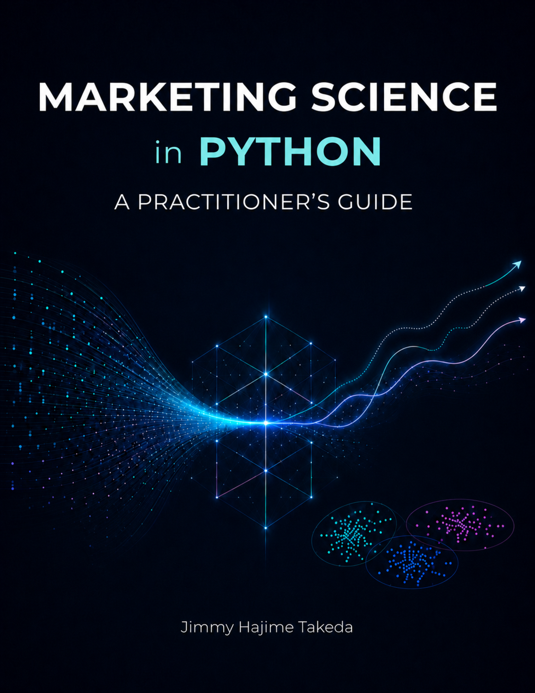

Marketing Science in Python
因果推断、营销组合建模、定价、预测与客户分析实践指南
前言

关于中文版
本页是英文版 Marketing Science in Python 的AI翻译。英文版为正式版本，如有出入，以英文版为准。代码、Notebook 和图片中的文字保持英文。 阅读英文版
上个月的活动带来了一波销售高峰，团队正在庆祝。但这真的是活动的功劳吗？同一周气温上升了。一个竞争对手断货了。一位网红发布了关于这款产品的内容。即使销售额增加了，活动是真的带来了有价值的新客户，还是只是把本来就会发生的购买提前了？
即便到了 2026 年，这些问题依然难以回答。AI 加快了营销的创意环节，比如生成广告文案、制作横幅、搭建落地页。编程助手让写代码和跑分析快了很多。但决策环节没有跟上。“它起作用了吗？”和“接下来该做什么？”这样的问题，依然和以前一样难。在营销中，你永远无法测量或控制每一个重要的变量。你必须在不确定性下做决策，而且往往时间紧迫。这正是人的判断最重要的地方。
本书是一本让营销决策更可靠的实践指南。它有三点与众不同：
- 本书聚焦于核心营销问题。 它涵盖的是数据科学在实践中最有用的那些营销问题。它不是一本模型目录。
- 提供 Python notebook。 第 3 至 6 部分的每个实战章节都配有一个配套 Notebook，在公开数据集或合成数据上运行。每个 notebook 都连同输出一起提交，因此你可以直接在 GitHub 上阅读结果。
- 使用现代 Python 库。 本书使用 Google Meridian、PyMC-Marketing、EconML、TimesFM 和 BERTopic 等工具。目的不是展示这些库，而是解释每个工具帮助解决什么问题。
这是我在开始把数据科学应用到营销时，希望自己手边就有的那本指南。
本书适合谁
写这本书时，我心中有三类读者：
- 在营销领域工作或正在转向营销领域的数据科学家。 如果你已经熟悉统计学和机器学习，但想更多地了解营销特有的问题，这本书就是为你写的。
- 想看到具体实现的营销分析师。 如果你了解因果推断或营销组合建模（MMM）等方法，但想看看它们在实践中是如何实现的，本书提供了端到端的 Python 示例。
- 想更有效地使用数据科学的营销人员和企业管理者。 越来越多的营销人员和 CXO 现在借助 AI 以 vibe coding 的方式自己做分析。如果你是其中一员，本书是了解这种分析能做什么、不能做什么的起点。你可以跳过代码，专注于每章开头的问题界定。
本书不是 Python 或机器学习的入门书。它不是理论教材，也不是一本讲数字营销战术的书。它位于两者的交叉点：应用于营销决策的数据科学。
如何阅读本书
第 1 和第 2 部分奠定基础：什么是营销科学，营销数据是什么样的，以及如何设计能带来更好决策的分析。请先读这两部分。之后，你不必按顺序阅读。选择与你面前的问题相匹配的路径即可。

致谢
非常感谢 Julien Bourdon-Miyamoto（Kuwalyst 联合创始人兼 CEO；前 Meta Staff Ads ML Engineer）对本书的技术审阅。
也感谢 Colt Allen（PyMC Labs）在 PyMC-Marketing 和客户终身价值建模方面提供的建议。